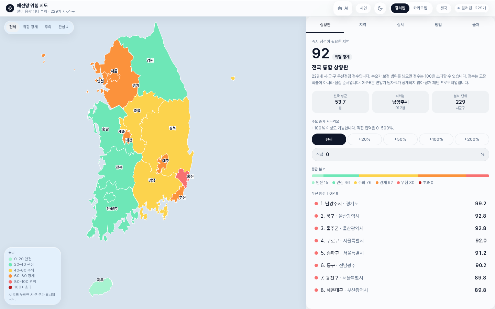
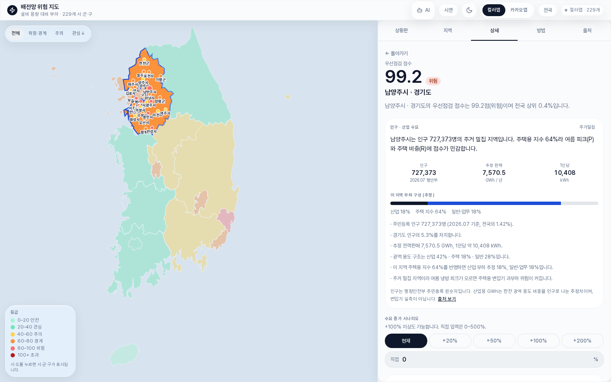
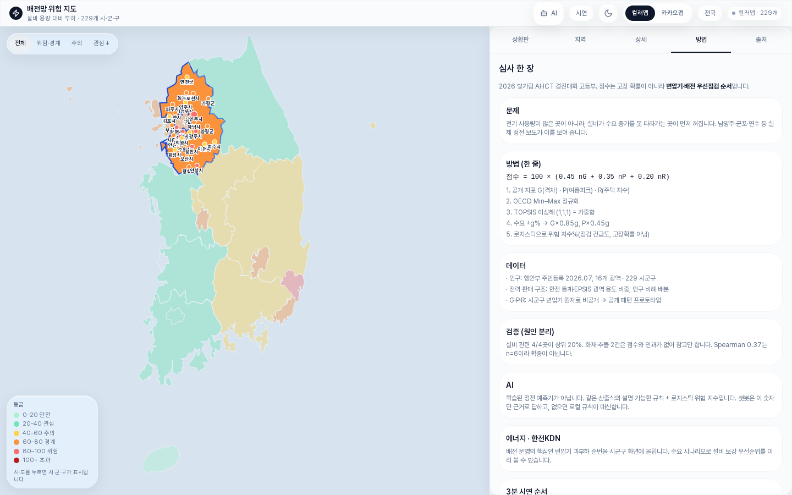

2026 빛가람 AI·ICT 경진대회 · 작품소개서
우리 동네 변압기가 전기를
얼마나 버틸 수 있는지 보는 지도
점수는 고장 확률이 아닙니다. 어디를 먼저 점검할지 순서입니다.
이유는 숨기지 않습니다. 왜 그 점수인지 한글로 풀어 줍니다.
블라인드 심사라 학교·이름은 적지 않았습니다.
배전망 위험 지도
우리 동네 변압기가 전기를 얼마나 버틸 수 있는지 보는 전국 지도.
수도관이 가느라면, 물을 많이 쓰는 집이 아니어도 수압이 떨어집니다. 전기도 같다고 생각했습니다. 전기를 많이 쓰는 곳이 위험한 게 아니라 변압기가 작은데 쓰는 양이 늘어난 곳이 위험합니다.
전국 시·군·구 229곳을 지도에 올려 두고, “여기를 먼저 보면 좋겠다”는 순서를 숫자로 만들었습니다. 시·도를 누르면 그 안의 동네가 나오고, 하나를 고르면 왜 점수가 높은지 한글로 나옵니다. 사용량이 50% 늘면 점수가 어떻게 바뀌는지도 바로 계산합니다.
이 작품의 AI는 학습해서 사고를 맞히는 딥러닝이 아닙니다. 설명 가능한 AI(XAI)입니다. 점수가 나온 식을 따라가면 이유가 그대로 나옵니다. 전력 현장에서는 이유를 모르는 답을 믿기 어렵다고 생각해서, 일부러 이 방식을 골랐습니다.
지금 당장 쓰는 곳도 정해 두었습니다. 한전 내부 컴퓨터 대신은 못 합니다. 수업, 발표, 시연에서 배전망을 설명할 때, 지자체가 지역 설비를 그림으로 이야기할 때 쓰려고 만들었습니다.
뉴스를 찾아보면 아파트 정전이 자주 나옵니다. 남양주 지하주차장 화재, 군포에서 버스가 변압기를 들이받은 사고, 인천 연수구 정전, 광주 산수동 변압기 고장처럼 집이 멈추는 일이 실제로 있습니다. 원인을 보면 불, 추돌, 낡은 기계가 섞여 있습니다. “서울이 전기를 제일 많이 쓰니까 서울이 제일 위험하다”는 틀린 답입니다.
| 내용 | |
|---|---|
| 하고 싶은 것 | 설비가 수요를 버티는지, 같은 방법으로 전국을 비교한다. |
| 하고 싶은 것 | 점수가 나온 이유를 사람이 읽을 수 있게 한다. |
| 하고 싶은 것 | 실제 정전 뉴스와 줄을 대조하고, 과장하지 않는다. |
| 안 하는 것 | 몇 시에 고장이 난다고 맞히기. 이유를 모르는 예측기 만들기. |
비슷한 작품은 “내일 얼마나 쓸까?”를 맞힙니다. 우리는 그다음을 물었습니다. 그 전기를 설비가 받을 수 있나.
| 수요 예측 | 블랙박스 AI | 우리 작품 | |
|---|---|---|---|
| 질문 | 얼마나 쓸까 | 고장 날까 | 이 동네 설비가 버티나 |
| 단위 | 나라, 큰 지역 | 센서·로그 | 시·군·구 229 |
| 결과 | 예측 숫자 | 확률, 이유를 모를 수 있음 | 점검 순서 + 한글 이유 |
| 쓰는 곳 | 수요 계획 | 연구·내부 모델 | 설명, 발표, 점검 이야기 |
참신한 점은 새로운 딥러닝이 아닙니다. 보는 눈과, 답을 말하는 방식을 바꾼 것입니다. 고장은 나라 평균이 아니라 변압기 한 대에서 시작합니다. 그래서 시·군·구 줄을 세우고, 그 줄을 설명 가능한 AI로 읽게 했습니다.
딥러닝을 안 쓴 이유는 기술이 없어서가 아닙니다. 지금은 변압기 원자료가 없고, 이유를 모르는 답은 배전 점검에 쓰기 어렵습니다. 점수는 식에서만 나오고, 식은 화면 「방법」 탭에서 그대로 볼 수 있습니다.
실제 정전 뉴스 6곳과 줄을 대조한 표는 5.2에 있습니다. 맞혔다고 쓰지 않았습니다. 위치만 보여 줍니다.
지금 단계는 계산기 + 지도입니다. 한전 내부망에 붙어 있지 않습니다.
점수는 식에서만 나옵니다. 챗봇도 그 숫자만 읽습니다. 없는 숫자를 지어내지 않게 만들었습니다.
나중에 한전 자료가 생기면 이렇게 넓히려고 자리를 남겨 두었습니다. 아래는 계획입니다. 지금 사이트에 들어 있는 기능이 아닙니다.
| 1단계 (지금) | 2단계 (자료가 생기면) | 3단계 (그다음) |
|---|---|---|
| 공개 자료 + 설명 가능한 규칙 | 시군구 판매량, 가능하면 부하 기록 | 이상 징후를 찾는 학습 모형 검토 |
3단계를 지금 했다고 말하지 않습니다. 자료 없이 학습 모형을 만들면 그게 더 위험하다고 봤습니다.
| 이름 | 하는 일 |
|---|---|
| TypeScript, React | 화면과 버튼 |
| 지도 | 색칠 지도. 키를 넣으면 카카오맵 |
| 점수 식 | 세 숫자를 점검 순서로 바꿈 |
| 설명 가능한 AI (XAI) | 같은 식을 한글로 읽음. 학습하지 않음 |
가중치를 이렇게 나눈 이유입니다.
이 숫자는 설문으로 뽑은 값이 아닙니다. 지금 단계의 시작값입니다. 나중에 지역이나 계절에 따라 바꿀 수 있게, 식과 화면을 분리해 두었습니다. 지금은 슬라이더로 가중치를 바꾸는 화면은 없습니다. 있다고 쓰지 않습니다.
상세 화면의 위협 지수(%)는 점수를 보기 쉽게 눌러 담은 값입니다. 고장이 날 확률이 아닙니다. AI는 “격차가 커서 점수가 높다”처럼 식에 있는 이유만 말합니다.

그림 1. 처음 화면. 전국 지도와 상황판.

그림 2. 한 지역을 고르면 이유, 수요 증가, 설명이 나옵니다.

그림 3. 방법 탭. 식과 뉴스 대조.
발표할 때 1분 시연 순서입니다. 위쪽 시연 버튼을 눌러도 비슷하게 돕니다.
| 단계 | 무엇을 | 지금 |
|---|---|---|
| 1 | 문제와 점수 식, 설명 가능한 AI | 끝 |
| 2 | 전국 229곳 지도와 화면 | 끝 |
| 3 | 뉴스 대조, 출처, 시연 | 끝 |
| 4 | 이 소개서와 발표 | 하는 중 |
| 5 | 공개된 시군구 전기 사용량을 점수에 넣기 | 자료가 생기면 |
| 6 | 한전 내부 부하 기록, 그다음 학습 모형 검토 | 협력 후에만 |
웹사이트는 지금 바로 돌아갑니다. 카카오맵은 키가 있을 때만 켜지고, 없으면 색칠 지도를 씁니다.
점수를 만들었으면 실제 일과 한번은 맞춰 봐야 한다고 생각했습니다. 뉴스에 나온 정전 6곳을 우리 줄에서 찾았습니다. 229곳 기준, 수요 증가 0%입니다.
| 지역 | 실제 사고 | 원인 | 우리 점수 | 순위 |
|---|---|---|---|---|
| 경기 남양주 | 약 370가구 정전 | 화재 | 99.2 | 1 / 229 |
| 전남광주 동구 | 변압기 고장, 약 950세대 | 설비 | 90.2 | 6 / 229 |
| 경기 군포 | 버스 추돌, 2,255세대 | 추돌 | 87.5 | 11 / 229 |
| 대구 달서구 | 피뢰기 파손, 약 2,900세대 | 설비 | 84.5 | 14 / 229 |
| 인천 연수구 | 약 1,900세대 정전 | 설비 | 81.5 | 24 / 229 |
| 인천 남동구 | 약 1,200가구 정전 | 원인 불충분 | 79.3 | 33 / 229 |
| 문제 | 대응 |
|---|---|
| 변압기 실제 용량을 모름 | 점수는 프로토타입이라고 화면에 적음 |
| 딥러닝을 안 씀 | 이유를 말하는 방식을 고름. 다음 단계는 계획으로만 적음 |
| 뉴스가 6개뿐 | 위치만 보여 주고, 맞혔다고 쓰지 않음 |
| 카카오맵이 안 열릴 수 있음 | 색칠 지도가 기본. 점수는 같음 |
지금은 돈을 버는 앱이 아닙니다. 지금 당장 쓸 수 있는 곳은 세 가지입니다.
한전 내부 숫자를 연결하면 그때는 설명용 대시보드가 될 수 있습니다. 배전자동화시스템(DAS)을 대신한다고 쓰지 않습니다. DAS는 선로를 감시하고 여는 현장 시스템입니다. 우리는 그 옆에서, 시·군·구 단위로 “왜 여기를 먼저 보나”를 설명하는 화면입니다.
한전KDN은 배전 정보화와 설비 안정을 담당하는 회사입니다. 배전자동화시스템(DAS)처럼 전봇대·개폐기를 보는 일과, 우리처럼 변압기가 수요를 버티는지 설명하는 일은 질문이 같습니다. 한전KDN이 DAS 교육 센터를 연 것도, 이 일을 사람에게 설명해야 해서입니다.
탄소가 몇 톤 줄어든다는 숫자는 넣지 않았습니다. 변압기 기록이 없어서, 만들면 거짓말입니다.
| 효과 | 지금 말할 수 있나 |
|---|---|
| 왜 위험한지 한글로 설명 | 지금 됨 |
| 수요가 늘면 점수가 바뀌는지 | 지금 됨 |
| 수업·발표에서 바로 보여 주기 | 지금 됨 |
| 정전·탄소가 실제로 줄어드는지 | 아직 모름. 그래서 숫자를 안 적음 |